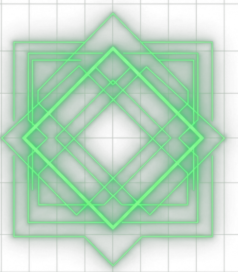
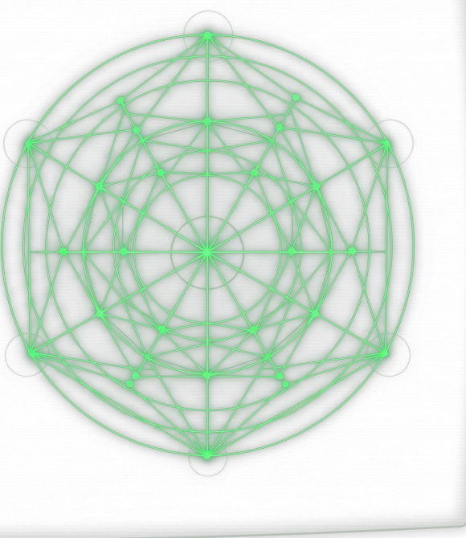
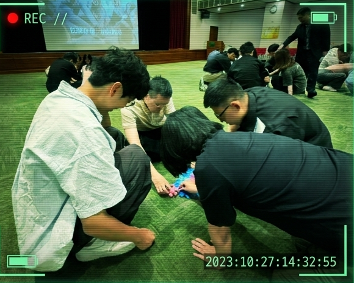
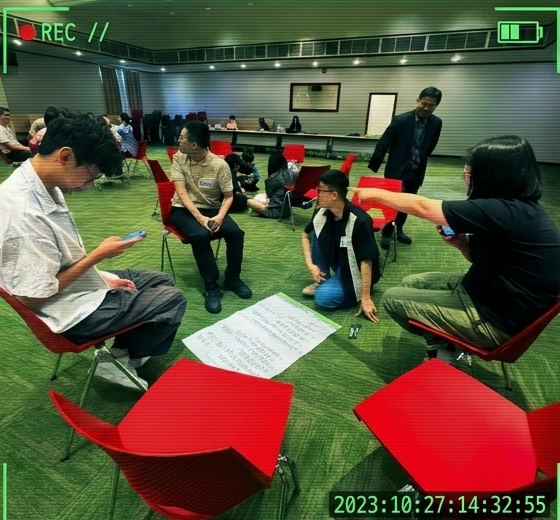
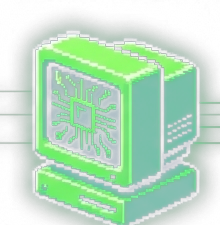

>_ SYSTEM.BOOT();
>_ LOADING GROUP_02_DATA...
>_ INITIALIZING REPORT...
結訓報告
### 第二組 主題：[ 敏捷力 ]
STATUS: READY
PRESS ANY KEY TO CONTINUE _
1. 簡單介紹組員
>_ [ 載入系統開發與數據分析模組 ]
─ □ ×
ID: 廖睿辰
TAG: [ 數據暨人工智慧發展部 客戶智能科 ]
TASK: AI agent 建置 / 訓練機器學習模型
TAG: [ 數據暨人工智慧發展部 客戶智能科 ]
TASK: AI agent 建置 / 訓練機器學習模型
─ □ ×
ID: 賴約翰
TAG: [ 行銷資訊部 台中軟體開發科 ]
TASK: 開發專案派件與維護
TAG: [ 行銷資訊部 台中軟體開發科 ]
TASK: 開發專案派件與維護
─ □ ×
ID: 陳志鴻
TAG: [ 資訊策略發展部 資訊科技發展科 ]
TASK: 運用 AI 進行開發並把 AI 開發流程推廣給其他部門
TAG: [ 資訊策略發展部 資訊科技發展科 ]
TASK: 運用 AI 進行開發並把 AI 開發流程推廣給其他部門

1. 簡單介紹組員
>_ [ 載入專案管理與業務溝通模組 ]
─ □ ×
ID: 呂喬盈
TAG: [ 專案投資部 ]
TASK: 國內公共/基礎建設評估 /
私募基金管理 / 未上市櫃企業投後管理
TAG: [ 專案投資部 ]
TASK: 國內公共/基礎建設評估 /
私募基金管理 / 未上市櫃企業投後管理
─ □ ×
ID: 陳怡靜
TAG: [ 理賠部 多元理賠科 ]
TASK: 分析病歷 / 案件處理與高頻人際溝通
TAG: [ 理賠部 多元理賠科 ]
TASK: 分析病歷 / 案件處理與高頻人際溝通

2. 四天受訓過程中，小組怎麼樣展現這項職能
>_ QUERY: 敏捷力是什麼?
[ 輸入條件 INPUT ]
⚠ 情境不明 │ ⚠ 需求快速變動 │ ⚠ 資訊不完整↓ (EXECUTE AGILITY_ALGORITHM)
[ 核心能力 PROCESSING ]
1. [快速理解] 問題 2. [持續學習] 新知 3. [靈活調整] 策略↓
[ 輸出結果 OUTPUT ]
🎯 採取適當行動以達成目標2. 四天受訓過程中，小組怎麼樣展現這項職能
>_ EXECUTE: 實戰任務測試▌
─ □ ×
[ 任務 A：機器人製作 ]
ACTION: 先寫好一版「簡單移動與發射功能」
RESULT: 快速實測攻擊能力，大幅加快進度（MVP 測試）
ACTION: 先寫好一版「簡單移動與發射功能」
RESULT: 快速實測攻擊能力，大幅加快進度（MVP 測試）
─ □ ×
[ 任務 B：收銀機任務 ]
CONTEXT: 遊戲規則與資訊非常不足
ROUND_1: 選擇「不行動」，優先紀錄數字分布狀態
ROUND_2: 根據分布數據，精準分配每人的目標數字
RESULT: 短時間內得到好成績，展現敏捷力
CONTEXT: 遊戲規則與資訊非常不足
ROUND_1: 選擇「不行動」，優先紀錄數字分布狀態
ROUND_2: 根據分布數據，精準分配每人的目標數字
RESULT: 短時間內得到好成績，展現敏捷力

2. 四天受訓過程中，小組怎麼樣展現這項職能
>_ EXECUTE: 團隊協作與收斂
[ 任務 C：小組報告討論 ]
[ Step 1: 產生需求 ]
快速建立大略框架
快速建立大略框架
>>> 敏捷對齊 >>>
[ Step 2: 想法碰撞 ]
收集不同觀點
收集不同觀點
>>> 動態修正 >>>
[ Step 3: 細節調整 ]
根據回饋迭代最佳版本
根據回饋迭代最佳版本

3. 未來在工作中會如何深化這項職能的應用？
>_ SYSTEM UPGRADE PLAN _
[ PATCH_1: 專案開發 ]
情境：收到 BU 需求時
敏捷行動：快速製作 prototype 供測試
效益：有效獲取反饋，對齊產品面貌，大幅加速專案進程
[ PATCH_2: 部門協作 ]
情境：跨部門合作發現理解不同時
敏捷行動：及時主動提問，理解雙方需求
效益：動態修改合作流程，確保專案順利推進
[ PATCH_3: 技術導入 ]
情境：公司導入新 AI 產品時
敏捷行動：主動多測試 DC
效益：將新工具無縫融入現有流程，提升工作效率與品質
4. 分享組員參與過或使用過公司的學習資源
>_ CONNECTING TO LEARNING DATABASES...
[ DATABASE 01 ]

### > hahow
[ 狀態：已連線 ]
跨領域線上學習資源，
持續擴展團隊技能樹
[ DATABASE 02 ]
### > Hyread
[ 狀態：已連線 ]
企業數位圖書館，
提供豐富知識庫作為決策後盾
>_ REPORT COMPLETED.
>_ AGILITY MODULE: ACTIVATED.
感謝聆聽
LOGGING OFF..._